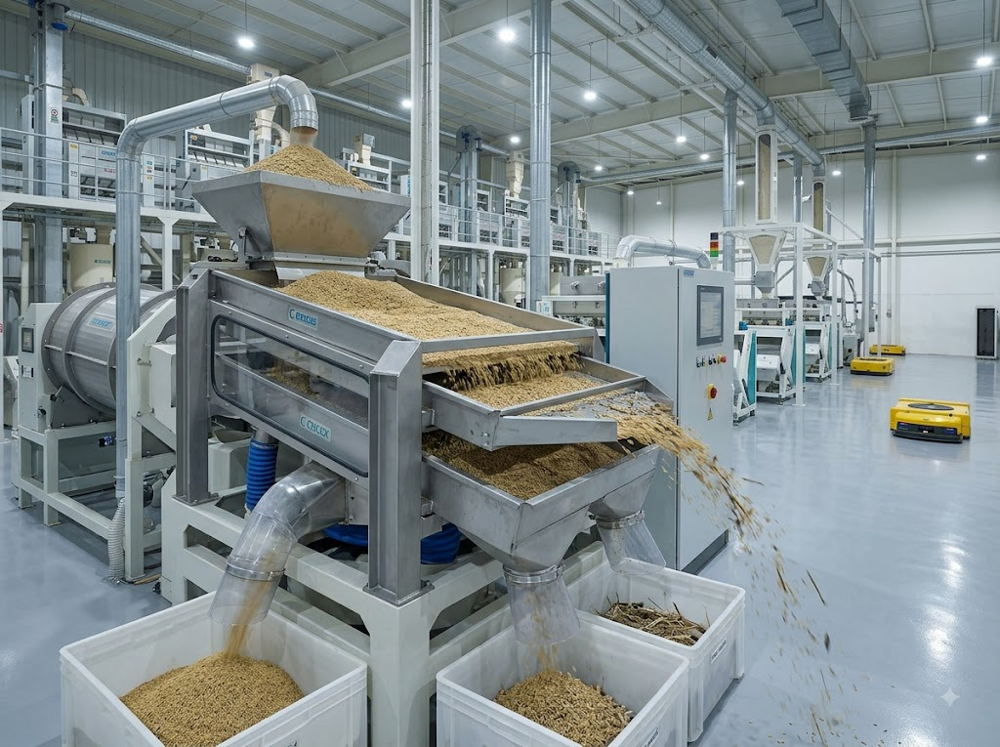
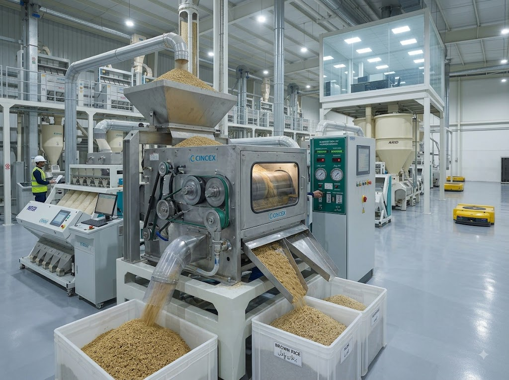
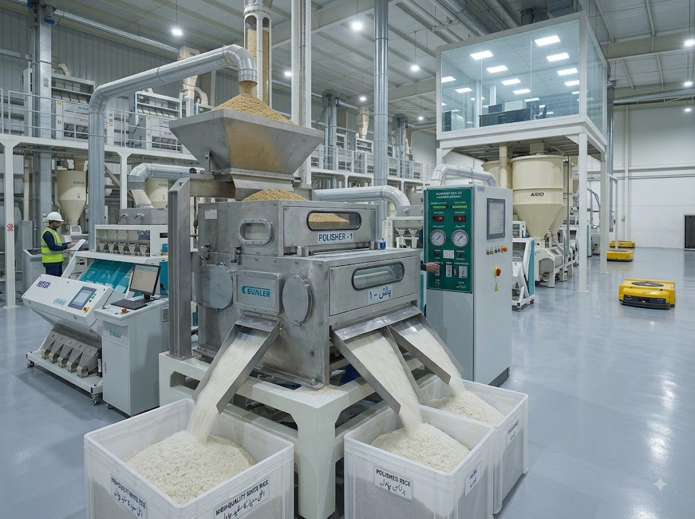
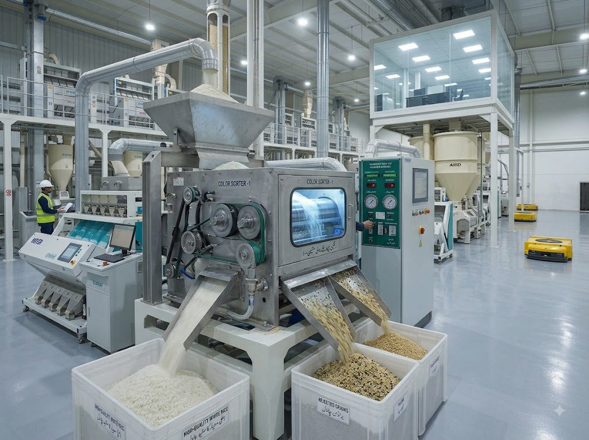
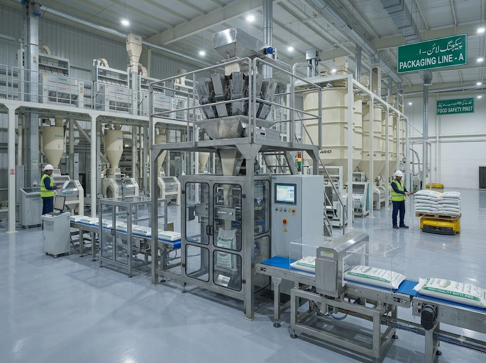

Our Milling Process
State-of-the-art rice processing with advanced technology ensuring premium quality at every step
From Paddy to Perfect Rice
Our comprehensive 5-step milling process transforms raw paddy into premium rice varieties

Cleaning
Raw paddy is thoroughly cleaned to remove impurities, stones, and foreign materials using advanced screening equipment.

De-husking
Outer husk is carefully removed to reveal brown rice while minimizing grain breakage and preserving nutritional value.

Polishing
Grains are polished to the desired whiteness level, removing bran layers while maintaining grain integrity and natural shine.

Color Sorting
Advanced optical sorters detect and remove discolored, damaged, or foreign grains ensuring consistent quality and purity.

Packaging
Final product is packed in various formats maintaining freshness, quality, and compliance with international standards.
Quality Control at Every Stage
Real-Time Monitoring
Continuous monitoring of each processing stage ensures consistent quality and immediate detection of any deviations.
Automated Systems
Advanced automation minimizes human error and ensures precise control over temperature, moisture, and processing parameters.
Batch Testing
Every batch undergoes rigorous testing for grain length, moisture content, purity, and broken percentage before final approval.
Dedicated Testing Laboratories
In-House Quality Lab
Our state-of-the-art in-house laboratory is equipped with modern testing equipment to analyze physical and chemical properties of rice at every processing stage.
- Moisture content analysis
- Grain length and width measurement
- Broken percentage calculation
- Purity and admixture testing
- Whiteness and color uniformity assessment
Daily Processing Capacity
Average Purity Level Achieved
Experience Our Processing Excellence
Discover how our advanced milling technology and quality control deliver premium rice for your business.